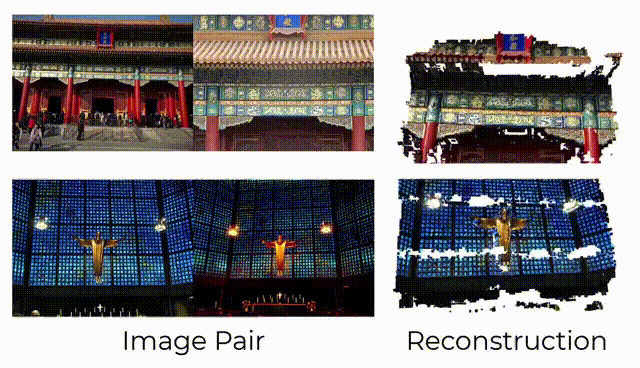
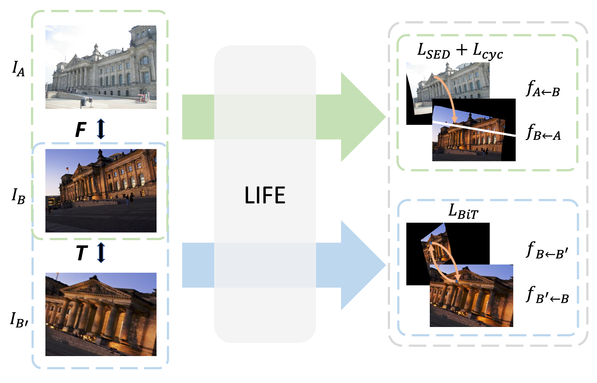
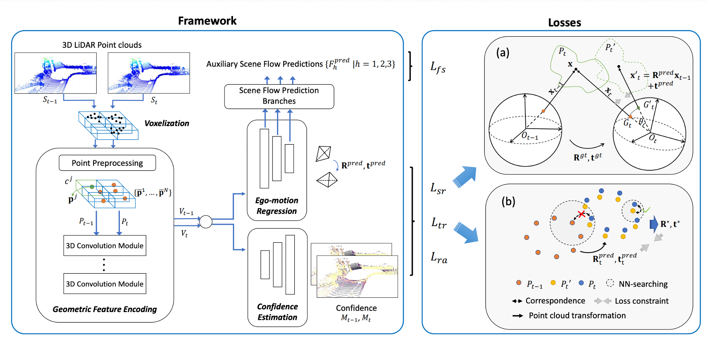
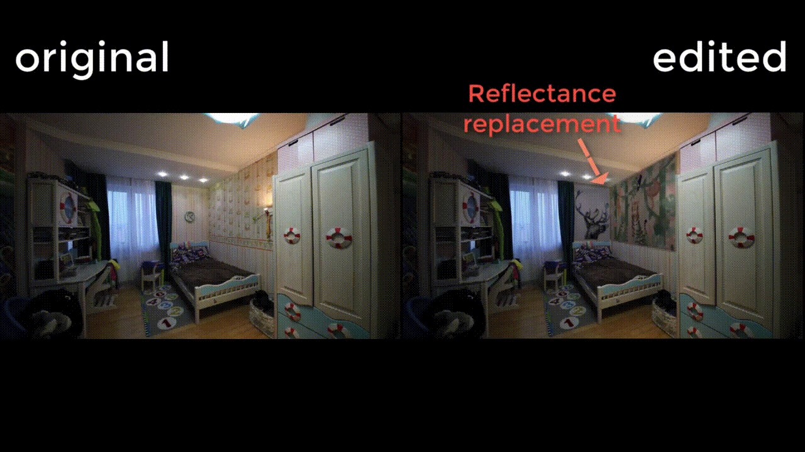

Publication
DiffRoom: Diffusion-based High-Quality 3D Room Reconstruction and Generation with Occupancy Prior
Arxiv 2023
Paper
Project Page
VideoFlow: Exploiting Temporal Cues for Multi-frame Optical Flow Estimation
Arxiv 2023
Ranks 1st on Sintel Optical Flow benchmark on Mar. 15th, 2023
Paper
BlinkFlow: A Dataset to Push the Limits of Event-based Optical Flow Estimation
Arxiv 2023
Paper

PATS: Patch Area Transportation with Subdivision for Local Feature Matching
CVPR 2023
Paper
Project Page
FlowFormer++: Masked Cost Volume Autoencoding for Pretraining Optical Flow Estimation
CVPR 2023
Ranks 1st on Sintel Optical Flow benchmark on Mar. 1th, 2023
Paper

NeuralMarker: A Framework for Learning General Marker Correspondence
ACM Transactions on Graphics (SIGGRAPH Asia 2022)
Paper
Project Page
Code
Controllable 3D Face Synthesis with Conditional Generative Occupancy Fields
NIPS 2022
Paper
Project Page
Code
FlowFormer: A Transformer Architecture for Optical Flow
ECCV 2022
Ranks 1st on Sintel Optical Flow benchmark on Mar. 17th, 2022
Paper
Supp
Project Page
Code



SelfVoxeLO: Self-supervised LiDAR Odometry with Voxel-based Deep Neural Networks
CoRL 2020
Paper

NIID-Net: Adapting Surface Normal Knowledge for Intrinsic Image
Decomposition in Indoor Scenes
TVCG 2020
Paper
Project Page
Code